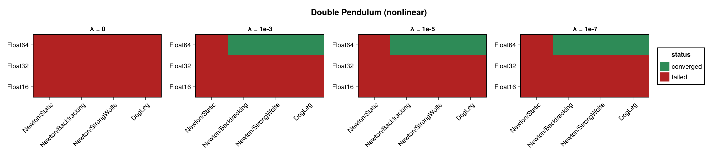
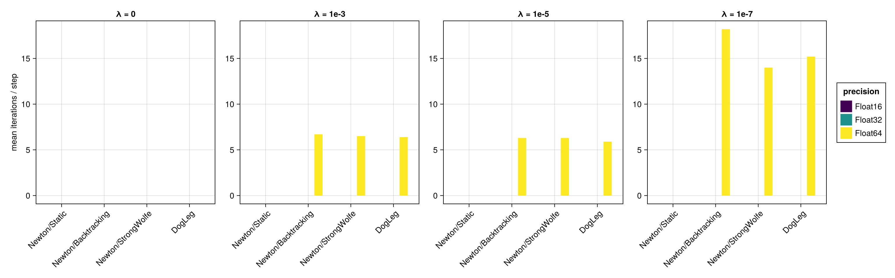
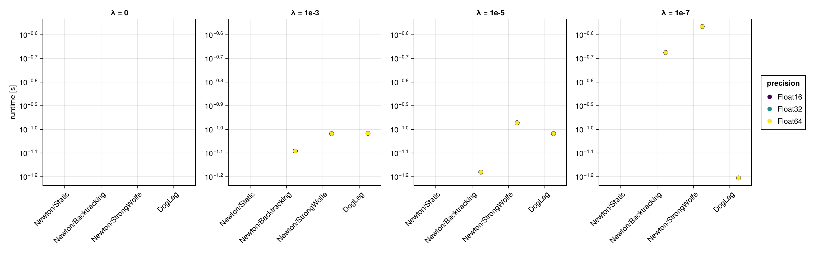
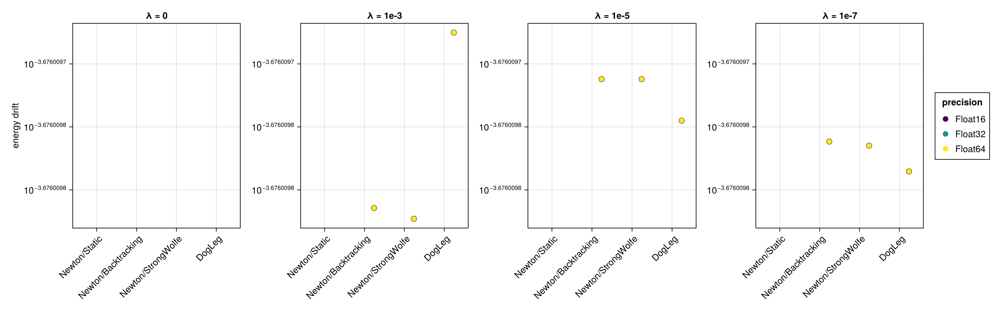
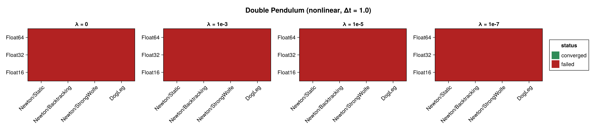
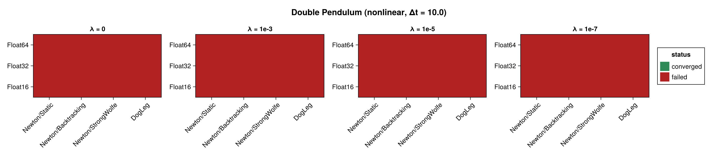

Double Pendulum (Nonlinear Integrator)
The double pendulum benchmarked with the NonLinear_OneLayer_GML integrator (see Harmonic Oscillator (Nonlinear Integrator) for the network setup and the regularization sweep). It is built as a two-dimensional lodeproblem; being chaotic and strongly nonlinear, it is a demanding test for the implicit network solve. Its Hamiltonian depends on both q and p, so the energy drift is evaluated from the full state. No closed-form solution exists.
The figures panel by the regularization factor $\lambda$; solver configurations are on the x-axis and precisions are distinguished by colour. Results are shown at $\Delta t = 0.1$ and repeated for $\Delta t = 1.0$ and $\Delta t = 10.0$ (ten steps each).
using SolverBenchmark
spec = double_pendulum_lode_spec(timespan = (0.0, 1.0), timestep = 0.1)
df = run_nonlinear_benchmark(spec; timing = :quick, max_iterations = 100,
verbose = false, quiet = true)Convergence
plot_convergence(df; panelcol = :regularization, title = "Double Pendulum (nonlinear)")
Nonlinear iterations
plot_iterations(df; panelcol = :regularization)
Run time
plot_runtime(df; panelcol = :regularization)
Energy drift
plot_energy_drift(df; panelcol = :regularization)
Discussion
- Regularization is again decisive:
Newtonstalls at $\lambda = 0$ and converges in a few iterations once $\lambda > 0$.DogLeg(a trust-region method) is the most robust here — it can make progress even at $\lambda = 0$, where the line-search Newton variants do not. - The chaotic dynamics give a larger energy drift than the integrable examples, and the achievable step size is smaller — at $\Delta t = 1.0$ and above the solve struggles.
Float16fails (singular Newton Jacobian).
Results table
markdown_table(summary_table(df; panelcol = :regularization))| precision | solver_label | regularization | converged | iterations_mean | runtime_s | max_residual | energy_drift |
|---|---|---|---|---|---|---|---|
| Float16 | Newton/Static | λ = 0 | ✗ | — | — | — | — |
| Float16 | Newton/Static | λ = 1e-3 | ✗ | — | — | — | — |
| Float16 | Newton/Static | λ = 1e-5 | ✗ | — | — | — | — |
| Float16 | Newton/Static | λ = 1e-7 | ✗ | — | — | — | — |
| Float16 | Newton/Backtracking | λ = 0 | ✗ | — | — | — | — |
| Float16 | Newton/Backtracking | λ = 1e-3 | ✗ | — | — | — | — |
| Float16 | Newton/Backtracking | λ = 1e-5 | ✗ | — | — | — | — |
| Float16 | Newton/Backtracking | λ = 1e-7 | ✗ | — | — | — | — |
| Float16 | Newton/StrongWolfe | λ = 0 | ✗ | — | — | — | — |
| Float16 | Newton/StrongWolfe | λ = 1e-3 | ✗ | — | — | — | — |
| Float16 | Newton/StrongWolfe | λ = 1e-5 | ✗ | — | — | — | — |
| Float16 | Newton/StrongWolfe | λ = 1e-7 | ✗ | — | — | — | — |
| Float16 | DogLeg | λ = 0 | ✗ | — | — | — | — |
| Float16 | DogLeg | λ = 1e-3 | ✗ | — | — | — | — |
| Float16 | DogLeg | λ = 1e-5 | ✗ | — | — | — | — |
| Float16 | DogLeg | λ = 1e-7 | ✗ | — | — | — | — |
| Float32 | Newton/Static | λ = 0 | ✗ | — | — | — | — |
| Float32 | Newton/Static | λ = 1e-3 | ✗ | — | — | — | — |
| Float32 | Newton/Static | λ = 1e-5 | ✗ | — | — | — | — |
| Float32 | Newton/Static | λ = 1e-7 | ✗ | — | — | — | — |
| Float32 | Newton/Backtracking | λ = 0 | ✗ | 100 | 1.98 | 0.0477 | — |
| Float32 | Newton/Backtracking | λ = 1e-3 | ✗ | 100 | 1.9 | 0.0336 | — |
| Float32 | Newton/Backtracking | λ = 1e-5 | ✗ | — | — | — | — |
| Float32 | Newton/Backtracking | λ = 1e-7 | ✗ | 100 | 2.01 | 0.0355 | — |
| Float32 | Newton/StrongWolfe | λ = 0 | ✗ | 100 | 2.2 | 0.039 | — |
| Float32 | Newton/StrongWolfe | λ = 1e-3 | ✗ | 100 | 2.19 | 0.0189 | — |
| Float32 | Newton/StrongWolfe | λ = 1e-5 | ✗ | 100 | 2.14 | 0.0683 | — |
| Float32 | Newton/StrongWolfe | λ = 1e-7 | ✗ | 100 | 2.13 | 0.0845 | — |
| Float32 | DogLeg | λ = 0 | ✗ | 100 | 1.41 | 0.0427 | — |
| Float32 | DogLeg | λ = 1e-3 | ✗ | 100 | 1.51 | 0.0228 | — |
| Float32 | DogLeg | λ = 1e-5 | ✗ | 100 | 1.45 | 0.0624 | — |
| Float32 | DogLeg | λ = 1e-7 | ✗ | 100 | 1.43 | 0.0418 | — |
| Float64 | Newton/Static | λ = 0 | ✗ | — | — | — | — |
| Float64 | Newton/Static | λ = 1e-3 | ✗ | 100 | 0.437 | 6.9e-12 | — |
| Float64 | Newton/Static | λ = 1e-5 | ✗ | 100 | 0.321 | 6.33e-12 | — |
| Float64 | Newton/Static | λ = 1e-7 | ✗ | 100 | 0.303 | 1.37e-08 | — |
| Float64 | Newton/Backtracking | λ = 0 | ✗ | 43.4 | 0.639 | 1.82e-07 | — |
| Float64 | Newton/Backtracking | λ = 1e-3 | ✓ | 6.7 | 0.081 | 6.49e-13 | 0.000211 |
| Float64 | Newton/Backtracking | λ = 1e-5 | ✓ | 6.3 | 0.0659 | 8.97e-13 | 0.000211 |
| Float64 | Newton/Backtracking | λ = 1e-7 | ✓ | 18.2 | 0.211 | 4.2e-11 | 0.000211 |
| Float64 | Newton/StrongWolfe | λ = 0 | ✗ | 40.7 | 0.832 | 3.93e-08 | — |
| Float64 | Newton/StrongWolfe | λ = 1e-3 | ✓ | 6.5 | 0.0959 | 6.49e-13 | 0.000211 |
| Float64 | Newton/StrongWolfe | λ = 1e-5 | ✓ | 6.3 | 0.107 | 8.97e-13 | 0.000211 |
| Float64 | Newton/StrongWolfe | λ = 1e-7 | ✓ | 14 | 0.272 | 4.27e-11 | 0.000211 |
| Float64 | DogLeg | λ = 0 | ✗ | 32.6 | 0.232 | 9.37e-09 | — |
| Float64 | DogLeg | λ = 1e-3 | ✓ | 6.4 | 0.0962 | 2.2e-12 | 0.000211 |
| Float64 | DogLeg | λ = 1e-5 | ✓ | 5.9 | 0.0959 | 8.56e-13 | 0.000211 |
| Float64 | DogLeg | λ = 1e-7 | ✓ | 15.2 | 0.0623 | 2.05e-11 | 0.000211 |
Coarse time step (Δt = 1.0)
spec1 = double_pendulum_lode_spec(timespan = (0.0, 10.0), timestep = 1.0)
df1 = run_nonlinear_benchmark(spec1; timing = :quick, max_iterations = 100,
verbose = false, quiet = true)plot_convergence(df1; panelcol = :regularization, title = "Double Pendulum (nonlinear, Δt = 1.0)")
markdown_table(summary_table(df1; panelcol = :regularization))| precision | solver_label | regularization | converged | iterations_mean | runtime_s | max_residual |
|---|---|---|---|---|---|---|
| Float16 | Newton/Static | λ = 0 | ✗ | — | — | — |
| Float16 | Newton/Static | λ = 1e-3 | ✗ | — | — | — |
| Float16 | Newton/Static | λ = 1e-5 | ✗ | — | — | — |
| Float16 | Newton/Static | λ = 1e-7 | ✗ | — | — | — |
| Float16 | Newton/Backtracking | λ = 0 | ✗ | — | — | — |
| Float16 | Newton/Backtracking | λ = 1e-3 | ✗ | — | — | — |
| Float16 | Newton/Backtracking | λ = 1e-5 | ✗ | — | — | — |
| Float16 | Newton/Backtracking | λ = 1e-7 | ✗ | — | — | — |
| Float16 | Newton/StrongWolfe | λ = 0 | ✗ | — | — | — |
| Float16 | Newton/StrongWolfe | λ = 1e-3 | ✗ | — | — | — |
| Float16 | Newton/StrongWolfe | λ = 1e-5 | ✗ | — | — | — |
| Float16 | Newton/StrongWolfe | λ = 1e-7 | ✗ | — | — | — |
| Float16 | DogLeg | λ = 0 | ✗ | — | — | — |
| Float16 | DogLeg | λ = 1e-3 | ✗ | — | — | — |
| Float16 | DogLeg | λ = 1e-5 | ✗ | — | — | — |
| Float16 | DogLeg | λ = 1e-7 | ✗ | — | — | — |
| Float32 | Newton/Static | λ = 0 | ✗ | — | — | — |
| Float32 | Newton/Static | λ = 1e-3 | ✗ | — | — | — |
| Float32 | Newton/Static | λ = 1e-5 | ✗ | — | — | — |
| Float32 | Newton/Static | λ = 1e-7 | ✗ | — | — | — |
| Float32 | Newton/Backtracking | λ = 0 | ✗ | — | — | — |
| Float32 | Newton/Backtracking | λ = 1e-3 | ✗ | — | — | — |
| Float32 | Newton/Backtracking | λ = 1e-5 | ✗ | — | — | — |
| Float32 | Newton/Backtracking | λ = 1e-7 | ✗ | 93.2 | 0.818 | 439 |
| Float32 | Newton/StrongWolfe | λ = 0 | ✗ | 61.7 | 0.741 | 6.05 |
| Float32 | Newton/StrongWolfe | λ = 1e-3 | ✗ | 59.3 | 0.694 | 1.24 |
| Float32 | Newton/StrongWolfe | λ = 1e-5 | ✗ | 64 | 0.757 | 385 |
| Float32 | Newton/StrongWolfe | λ = 1e-7 | ✗ | — | — | — |
| Float32 | DogLeg | λ = 0 | ✗ | — | — | — |
| Float32 | DogLeg | λ = 1e-3 | ✗ | 82.4 | 0.281 | 5.09 |
| Float32 | DogLeg | λ = 1e-5 | ✗ | — | — | — |
| Float32 | DogLeg | λ = 1e-7 | ✗ | 67.4 | 0.258 | 1.63 |
| Float64 | Newton/Static | λ = 0 | ✗ | — | — | — |
| Float64 | Newton/Static | λ = 1e-3 | ✗ | — | — | — |
| Float64 | Newton/Static | λ = 1e-5 | ✗ | — | — | — |
| Float64 | Newton/Static | λ = 1e-7 | ✗ | — | — | — |
| Float64 | Newton/Backtracking | λ = 0 | ✗ | 71.6 | 0.763 | 7.59 |
| Float64 | Newton/Backtracking | λ = 1e-3 | ✗ | 57.7 | 0.685 | 576 |
| Float64 | Newton/Backtracking | λ = 1e-5 | ✗ | 44.3 | 0.405 | 1.04 |
| Float64 | Newton/Backtracking | λ = 1e-7 | ✗ | 54.7 | 0.503 | 0.325 |
| Float64 | Newton/StrongWolfe | λ = 0 | ✗ | — | — | — |
| Float64 | Newton/StrongWolfe | λ = 1e-3 | ✗ | 66.6 | 0.709 | 392 |
| Float64 | Newton/StrongWolfe | λ = 1e-5 | ✗ | 40.1 | 0.574 | 6.6 |
| Float64 | Newton/StrongWolfe | λ = 1e-7 | ✗ | 74.8 | 1.35 | 216 |
| Float64 | DogLeg | λ = 0 | ✗ | 85 | 0.291 | 1.04 |
| Float64 | DogLeg | λ = 1e-3 | ✗ | 43.9 | 0.234 | 0.324 |
| Float64 | DogLeg | λ = 1e-5 | ✗ | 38.3 | 0.251 | 2 |
| Float64 | DogLeg | λ = 1e-7 | ✗ | 77.9 | 0.331 | 0.89 |
Large time step (Δt = 10.0)
spec10 = double_pendulum_lode_spec(timespan = (0.0, 100.0), timestep = 10.0)
df10 = run_nonlinear_benchmark(spec10; timing = :quick, max_iterations = 100,
verbose = false, quiet = true)plot_convergence(df10; panelcol = :regularization, title = "Double Pendulum (nonlinear, Δt = 10.0)")
markdown_table(summary_table(df10; panelcol = :regularization))| precision | solver_label | regularization | converged |
|---|---|---|---|
| Float16 | Newton/Static | λ = 0 | ✗ |
| Float16 | Newton/Static | λ = 1e-3 | ✗ |
| Float16 | Newton/Static | λ = 1e-5 | ✗ |
| Float16 | Newton/Static | λ = 1e-7 | ✗ |
| Float16 | Newton/Backtracking | λ = 0 | ✗ |
| Float16 | Newton/Backtracking | λ = 1e-3 | ✗ |
| Float16 | Newton/Backtracking | λ = 1e-5 | ✗ |
| Float16 | Newton/Backtracking | λ = 1e-7 | ✗ |
| Float16 | Newton/StrongWolfe | λ = 0 | ✗ |
| Float16 | Newton/StrongWolfe | λ = 1e-3 | ✗ |
| Float16 | Newton/StrongWolfe | λ = 1e-5 | ✗ |
| Float16 | Newton/StrongWolfe | λ = 1e-7 | ✗ |
| Float16 | DogLeg | λ = 0 | ✗ |
| Float16 | DogLeg | λ = 1e-3 | ✗ |
| Float16 | DogLeg | λ = 1e-5 | ✗ |
| Float16 | DogLeg | λ = 1e-7 | ✗ |
| Float32 | Newton/Static | λ = 0 | ✗ |
| Float32 | Newton/Static | λ = 1e-3 | ✗ |
| Float32 | Newton/Static | λ = 1e-5 | ✗ |
| Float32 | Newton/Static | λ = 1e-7 | ✗ |
| Float32 | Newton/Backtracking | λ = 0 | ✗ |
| Float32 | Newton/Backtracking | λ = 1e-3 | ✗ |
| Float32 | Newton/Backtracking | λ = 1e-5 | ✗ |
| Float32 | Newton/Backtracking | λ = 1e-7 | ✗ |
| Float32 | Newton/StrongWolfe | λ = 0 | ✗ |
| Float32 | Newton/StrongWolfe | λ = 1e-3 | ✗ |
| Float32 | Newton/StrongWolfe | λ = 1e-5 | ✗ |
| Float32 | Newton/StrongWolfe | λ = 1e-7 | ✗ |
| Float32 | DogLeg | λ = 0 | ✗ |
| Float32 | DogLeg | λ = 1e-3 | ✗ |
| Float32 | DogLeg | λ = 1e-5 | ✗ |
| Float32 | DogLeg | λ = 1e-7 | ✗ |
| Float64 | Newton/Static | λ = 0 | ✗ |
| Float64 | Newton/Static | λ = 1e-3 | ✗ |
| Float64 | Newton/Static | λ = 1e-5 | ✗ |
| Float64 | Newton/Static | λ = 1e-7 | ✗ |
| Float64 | Newton/Backtracking | λ = 0 | ✗ |
| Float64 | Newton/Backtracking | λ = 1e-3 | ✗ |
| Float64 | Newton/Backtracking | λ = 1e-5 | ✗ |
| Float64 | Newton/Backtracking | λ = 1e-7 | ✗ |
| Float64 | Newton/StrongWolfe | λ = 0 | ✗ |
| Float64 | Newton/StrongWolfe | λ = 1e-3 | ✗ |
| Float64 | Newton/StrongWolfe | λ = 1e-5 | ✗ |
| Float64 | Newton/StrongWolfe | λ = 1e-7 | ✗ |
| Float64 | DogLeg | λ = 0 | ✗ |
| Float64 | DogLeg | λ = 1e-3 | ✗ |
| Float64 | DogLeg | λ = 1e-5 | ✗ |
| Float64 | DogLeg | λ = 1e-7 | ✗ |